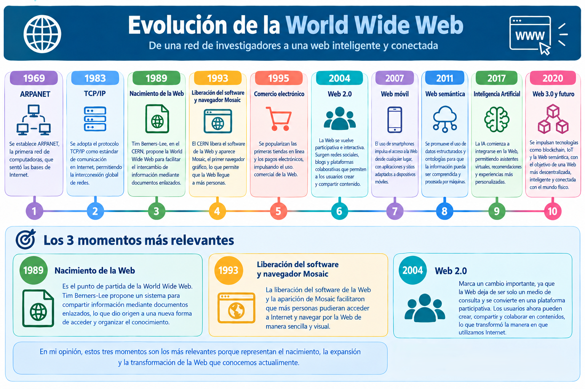

Línea del tiempo: Evolución de la Web
La World Wide Web ha evolucionado a través de diferentes acontecimientos tecnológicos que han transformado nuestra manera de acceder y compartir información.
10 momentos importantes de su evolución

Importancia de la evolución web
La creación de la World Wide Web permitió facilitar el acceso a la información mediante páginas conectadas por hipervínculos. Posteriormente, la aparición de navegadores gráficos y nuevas tecnologías impulsó el desarrollo de sitios más accesibles, visuales e interactivos.
Actualmente, la Web continúa evolucionando mediante nuevas herramientas y tecnologías que mejoran la experiencia de los usuarios.
Fuente de consulta
Puedes consultar más información sobre la historia de la Web en el siguiente enlace:
Historia de la Web - W3C